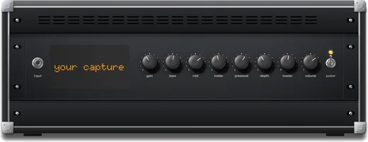
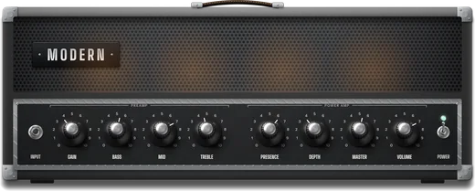
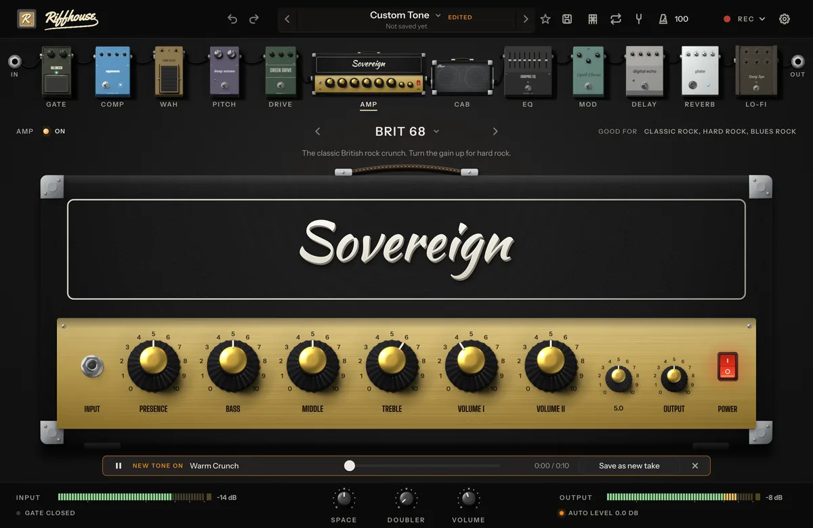

Free amp sims for Windows
Free amp sims come in three kinds: capture players, free editions of paid suites, and full free apps. Riffhouse is a full free app for Windows 10 and 11, with no account and nothing sold inside.
Three kinds of free
-

Capture players
They play back captures of real amps that other players made. You find the captures and a cabinet file yourself.
-

Free editions
A few amps from a paid suite. The rest is sold inside the app, and you usually need an account.
-

Full free apps
Amps, pedals, cabinets and tones, all included. Riffhouse is one.
Free and paid, side by side
| What you get | Free edition | Paid suite | Riffhouse |
|---|---|---|---|
| Price | $0 | Often $100 or more | $0 |
| Account | Usually | Usually | None |
| Gear | A few amps | The most | Every amp, pedal and cabinet |
| Sold inside | The full version | Expansions | Nothing |
| Plugin | Usually | Yes | VST3 |
| Source code | Closed | Closed | Open |
Paid suites have the most gear and paid support. Free means you can try them all.
What Riffhouse has
11 amps, 30 pedals, 12 cabinets and 197 tones, with a tuner, a looper and a recorder.

Questions
More about the app on the home page.
What is the best free amp sim for Windows?
It depends on what you want. For captures of real amps, a capture player and a free capture library. For a whole rig with no account and nothing to upgrade, Riffhouse. They cost nothing, so try two.
How is a paid amp sim different?
Paid suites usually have more gear, more polish and support. Free editions keep most of that gear for the paid version. A full free app like Riffhouse includes everything and sells nothing.
What is a capture?
A recording of how one real amp, at one setting, changes a guitar. A capture player plays it back. Riffhouse loads .nam captures too: drop the file on the window.
Do I need an audio interface?
No. Riffhouse runs through a computer’s mic jack with a 6.35 mm to 3.5 mm adapter. How to plug in.
Can I use it in my recording software?
Yes. The installer adds a VST3 plugin of the same rig, for any DAW on Windows that loads VST3.
Why does Windows warn me when I install it?
Riffhouse has no paid code-signing certificate yet. Press More info, then Run anyway. The code is open for anyone to check.
Does it run on Windows 10?
Yes. Windows 10 and 11, 64-bit, with no admin rights needed.